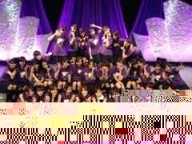

| 2012/12 29 Sat | 集大成(´>∀<｀)ゝ |
ちはるーむへようこそ＼(^^)／
思ったより遅くなってしまったーあー(> <)
今日ほんと一日中寝てたもんでー(> <)
すみませーん(> <)
とゆことでっ
27日のzepp東京ライブについて

髪型はポニー(o^^o)
来てくれた方！！！
本当に、本当にありがとうヽ(；；)丿♡
たくさんの方々が集まってくれてね、
ステージから見ててもぎっしりで
すごく嬉しかった

どうだったかなー(o^^o)⁇
感想待ってますっ！！
残念ながら、来れなかった方！！！
仕事納めの都合とか、予定が入ってたり、遠かったりで来れなかったー(> <)
っていう声も聞いてます(> <)
残念ですー(> <)
来年は、今年よりもっとたくさんライブをしたいと思ってるので
たくさんの方々を待ってますーー

いつも応援ありがとうヽ(；；)丿

いやあ...でもね、
ステージから見る、サイリウムが綺麗すぎて綺麗すぎて...
感動しちゃったよヽ(；；)丿♡!!
ほんとにヽ(；；)丿!!
うちは、やっぱりあのステージから見る最高の景色が大好きすぎる！！
 ヽ(；；)丿ヽ(；；)丿
ヽ(；；)丿ヽ(；；)丿
つぎは！
zeppを通り越してもっと広いおっきな所で
最高の景色が見たい！！(o^^o)
だからこれからも、来年も
日々精進していきますよ～っと(*´ω`*)
あとは曲数もね、もっと増やしたい∩^ω^∩
うちは今回、
人はなぜ、狼、春メロ、涙、白い雲、心の薬(上ハモリ)、ぐるかー、おいシャン、Bicycle、会いかも、マネキン、乃木詩
(セトリ順)
の全12曲を歌わせてもらいましたー(o^^o)嬉しい(o^^o)
んだけど、これからはもっと増やしていきたいな～☆
っていうのが本音！！
だから頑張るね


2012年の集大成！のライブが、今回のzepp東京ライブでほんとによかった(*´˘`*)♡
今年一番の盛り上がりで、
すごく嬉しかったし楽しかった(o^^o)
ありがとう(o^^o)

みんな大好きだよ！！！！
29日は、生駒ちゃんの誕生日だよー∩^ω^∩
ほんとにおめでとう

生駒ちゃんの責任感とか、重圧とか、感じてるものはすごいいっぱいあると思う(> <)
でもそれに負けないで挑んで、進んでいく姿勢が
かっこよくて大好きで憧れです！！
本当に大好きだよー(*/ω＼*)
素敵な一年にしようねっ！！！！
みなさん、おやすみなさーい∩^ω^∩
まえに作ったチョコのお家と共に∩^ω^∩笑
ばいるんっ
るんるんっ
ちはるんっ
(´>∀<｀)ゝ
コメント(131)
2012/12/29 01:06